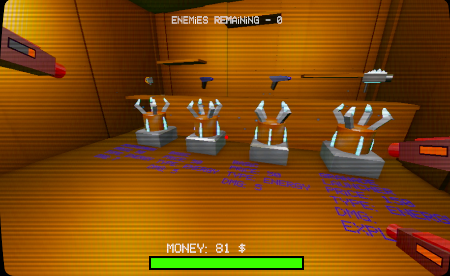
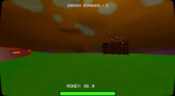
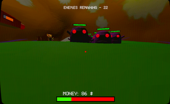

Prepare yourself to fight several hordes of enemies. Fortunately, as a robot you’ve got a few extra gun slots to level the odds.
Team size: 4 studentsRole: I implemented the core shop features (later refined by Ernests) and modelled and fully implemented the boss and the final fight.Scope: This project was completed in about 5 days as the final project for the course “Interactive Media Development”.Tools: Unity and Blender
Overview
Mossaratus is one of the university projects I’m most proud of, both for the game and the animated trailer we made. It was created for Interactive Media Development with three very good teammates.
You play as a six-armed robot fighting waves of enemies in a mossy cave. Between rounds you buy different guns, and when you fire on one side, all the guns on that side go off together.
What I’m proud of
Core experience
I feel quite proud of how our game was received during the testing days.
Not everyone wanted to play for very long, which is fine, because it wasn’t
really made for everyone. However, for the people who did enjoy this style
of game, we noticed they got really into it. Some players replayed the game
countless times, which is exactly what we were hoping for.
My contribution
I built the core of the shop system, which Ernests later refined, and designed and implemented the final boss and its attacks. I finished the boss a day or two before testing, so we didn’t have much time to adjust the difficulty. It ended up harder than we planned, but I liked how it gave the game an epic final showdown. At the showcase, the challenge was part of the fun.

Buying items in the shop
What I learned
In this case, I actually learned more from what went right than from what
went wrong, because the project went about as well as I could have hoped.
I gained a lot of comfort and confidence using Unity and Blender, especially
when working with animations.
Snapshots from the world of Mossaratus

Initial spawn

Fighting enemies
More from Mossaratus
Explore the animated trailer and a closer look at the final boss.